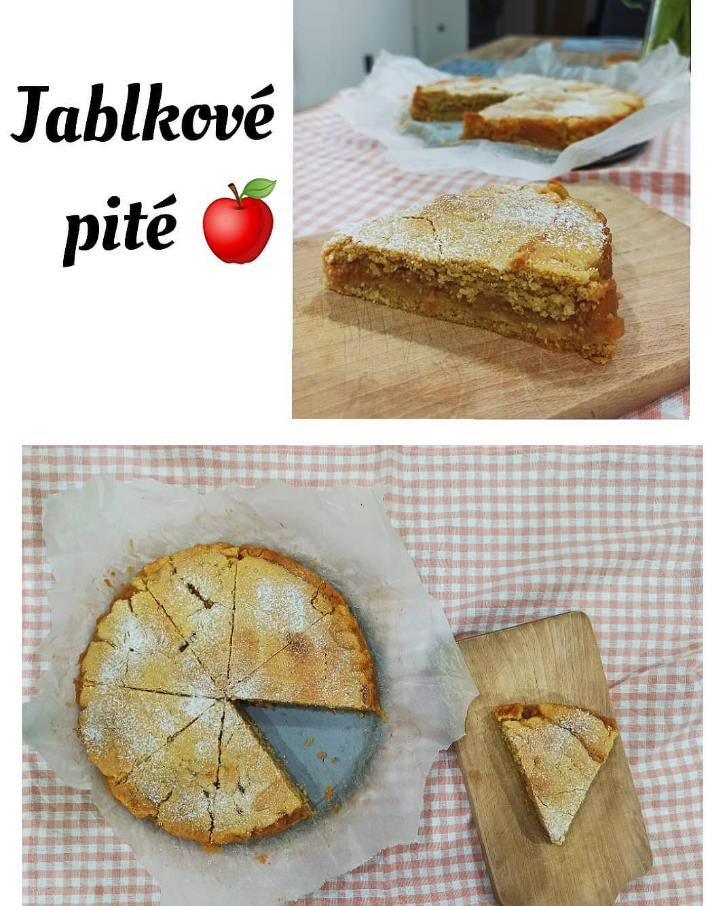

Jablkové pité nikdy nič nepokazí 😍
Pre istotu sem dávam aj recept ,aj keď ho tu už mám 🙂
Potrebujeme:
-250 gramov hladká múka špaldová
-75 gramov práškový cukor
-polovica balíka prášok do pečiva
-1 vajce
-125g maslo
-1 PL mlieka
-kôra z citróna alebo pomaranča
-pol balík škoricový cukor
-500g jablká postrúhané
-pol balík vanilkový cukor
Postup:
V mise zmiešame múku, cukor, prášok do pečiva, zmäknuté maslo, vajíčka, pomarančovú kôru a mlieko. Cesto vypracujeme rukou- má byť vláčne. Odložíme do chladničky cca na 1 hodinu.
Jablká nastrúhame, pridáme vanilkový a škoricový cukor, prípadne dochutíme podľa kyslosti jabĺk. Cesto vyberieme z chladničky, rozdelíme na dve časti. Jednu vyvaľkáme a orežeme podľa okrúhlej formy na pecenie. Na cesto rovnomerne rozložíme nastrúhané jablká. Rozvaľkáme druhú časť cesta a tiež z nej vyrežeme kruh. Jemne popritláčame, popicháme vidličkou a upečieme. Ja som piekla na 180 stupňov, cca 40 minút.
#jabłko#jablkovykolac#jablko#apple#applepie#dnespecu#dnespeciem#kolac#pecenie#peceniejeradost#pecieme#peciemeslaskou#baking#bakinglove